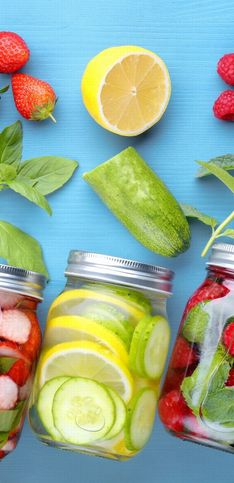

Recetas de bebidas frías, y mucho más - Monin - Monin
- Bebidas de café frías para combatir el calor del verano
- recetas de bebidas frias para primavera - Cocina Delirante
- 480 ideas de BEBIDAS CALIENTES en 2021 - Pinterest
- Bebidas frias - 7.706 recetas caseras- Cookpad
- Siete bebidas refrescantes para el verano y siete .
- 10 recetas de bebidas frías y calientes que están .
- Recetas de bebidas frías, y mucho más - Monin - Monin
- Recetas de Bebidas Frías - Kiwilimón
- Bebidas frías - Kraft Foods
¡Aprende a preparar Agua de frutas deslactosada con esta fácil y divertida! Cocina con Inspiración y descubre todos los tips saludables que NESTLÉ tiene . - Bebidas frias y calientes - Recetas La Serenísima
My Account Sign In Compare Products Track My Order Skip to Content Currency USD - dólar estadounidense CAD - dólar canadiense Toggle Nav Stores Latinoamérica Americas United States Canada Latinoamérica Global Asia Pacific & Gulf 中国 Europe Levant Africa France 日本 United Kingdom My Account My Cart Menu Recetas Todas las Recetas Recetas culinarias Videoteca Recetas en casa Cafés Cócteles Frappés y Batidos Smoothies Aguas saborizadas Limonadas Bebidas Calientes Cócteles sin alcohol Bebidas Frutales Sangrías Para niños Cervezas Saborizadas Sodas Tés Sin azúcar Estacional Té de Burbujas Recetas de Café de Moda Productos Todos los Productos Nuevos sabores Etiqueta Limpia Sabor del mes Sabores Estratégicos Saborizantes Premium Salsas gourmet Saborizantes orgánicos Saborizantes sin azúcar Smoothies de frutas Saborizantes naturales sin calorías Sabores concentrados Saborizantes de vainilla Sabores Florales Purés de frutas Concentrados de bebidas Saborizantes para Coctelería Dosificadores de Monin Mezclas para cócteles homecrafted Endulzantes Encuentra Monin Sobre Nosotros HISTORIA Responsabilidad Social Etiqueta Limpia Noticias Monin en las Américas Misión y Valores Responsabilidad Social Recursos Plataforma del Negocio Consejos y Técnicas Culinario Novedades Sabores en tendencia Innovadores de Bebidas Herramientas de ventas Account visualizando: Latin America (es) | haga clic para cambiar Stores Latinoamérica Americas United States Canada Latinoamérica Global Asia Pacific & Gulf 中国 Europe Levant Africa France 日本 United Kingdom Home Recetas Frappés y Batidos
Frappés y Batidos
Dibuja una sonrisa en tu rostro y crea un cosquilleo en tus papilas gustativas con estas mezclas favoritas.
Productos 1 - 12 de 108
Página: 1 2 3 4 5 Show 12 24 36 per page Filtrar por Position Clasificación Establecer Dirección Descendente Agitado De Maiz Dulce Shake De Café Y Galletas Trébol De La Suerte Freeze De Panqueque De Plátano Y Nuez Agitado De Avellana Y Caramelo Frappé De Dulce De Nuez De Arce Agitado De Durazno A La Parrilla Latte Agitado De Pan De Jengibre Glaseado De Mora Salvaje Frappé De Crema De Coco Agitado De Palomitas Caramelizadas De Mantequilla Y Nuez Agira HulaProductos 1 - 12 de 108
Página: 1 2 3 4 5 Show 12 24 36 per page Filtrar por Position Clasificación Establecer Dirección Descendente Bienvenido!Espero que tengas sed! El contenido se aplica únicamente a las
direcciones de envío de EE. UU.
En Monin, respetamos su privacidad y la cuidamos seriamente. Deseamos enviarle actualizaciones por correo electrónico. Sus datos personales son muy importantes para nosotros y siempre serán tratados con cuidado. Monin no enviará ni compartirá su información personal con fines de marketing. Para unirse a nuestra lista de marketing, marque la casilla. Puede darse de baja en cualquier momento. Lea la politica de privacidad completa . aquí.
Filtros Tipo de Bebida Frappé Milkshake Sirve cómo? (Hielo licuado) Frozen Culinario No Contiene Alcohol Sí No Sabores Monin Chocolate Natural Frappe Base Cream (Plain) Natural Frappe Base Crème Caramel Syrup Honey Organic Sweetener Mocha Natural Frappe Base Raspberry Purée Vanilla Bean Natural Frappe Base Saborizante de Amaretto Puré de Banana Puré de fruta de cereza Negra Puré de fruta Zarzamora Saborizante de Zarzamora (Blackberry) Saborizante de Curacao Azul (Blue Curacao) Concentrado Sabor de Arándano Puré de fruta de Arandano Saborizante de Mantequilla Oscura Saborizante de Toffee y Mantequilla Oscura Saborizante de mantequilla y pacana Jarabe de naranja confitada Saborizante de maíz dulce Saborizante de Mantequilla de Manzana de Caramelo Salsa de Caramelo (Caramel) Saborizante de Caramelo (Caramel) Saborizante de Dulce de Chocolate (Chocolate Fudge) Saborizante de Rollo de Canela (Cinnamon Bun) Puré de Coco (Coconut) Saborizante de Coco (Coconut) Concentrado de café frío Saborizante de Cookie Butter Saborizante de Cupcake (Cupcake) DISCO Salsa de Chocolate Negro (Dark Chocolate) Saborizante de fruta del dragón Salsa de Dulce de Leche Saborizante de Espresso Sabor concentrada de jengibre Saborizante de Pan de Jengibre (Gingerbread) Saborizante dorado de cúrcuma Saborizante de Menta Verde (Green Mint) Sabor concentrado de Haberno Saborizante de Hawaiian Island Sabor concentrado de Avellana Saborizante de Avellana (Hazelnut) Saborizante de Humo de Leña (Hickory Smoke) Saborizante de Miel Concentrado de Café Helado (Iced Coffee Concentrate) Saborizante de Crema Irlandesa Sabor Concentrado de Lima Saborizante de Mango Saborizante de Pancake con arce Saborizante de Arce con Especias (Maple Spice) Saborizante de Root Beer (OF Root Beer) Puré de Durazno (Peach) Saborizante de Durazno (Peach) Saborizante de Peanut Butter Saborizante de Menta Piperita (Peppermint) Sabor Concentrado de Piña Saborizante de Pistacho Saborizante de Granada (Pomegranate) Saborizante de Tarta de Calabaza (Pumpkin) Saborizante de Pumpkin Spice Saborizante de Frambuesa (Raspberry) Saborizante de Avellana Tostada (Roasted Hazelnut) Saborizante de Rosa (Rose) Saborizante de Caramelo Salado (Salted Caramel) Salsa toffee con caramelo y sal marina Saborizante de Azúcar con Especias (Spiced Brown Sugar) Puré de fruta Calabaza con especias Puré de Fresa (Strawberry) Saborizante de Fresa (Strawberry) Saborizante de Cola (Sugarcane Cola) Saborizante de Tiramisú Saborizante de Malvavisco Tostado (Toasted Marshmallow) Saborizante de Toffee Nut Saborizante de vainilla con especias Salsa de Chocolate Blanco (White Chocolate) Saborizante de Chocolate Blanco (White Chocolate) Saborizante de Blackberry Salvaje Saborizante de Uva salvaje (Wild Grape) Smoothie Mix de Frutos Rojos Tipo de Producto Sabores Concentrados Saborizantes Premium Salsas Gourmets Purés de Frutas Smoothies de Frutas Orgánico Endulzantes Concentrado de Bebidas Perfil de sabor Café Chocolate Cítrico Concentrados Confitería Cordial Endulzantes Especia Floral Fruta Menta Mezclas Mezclas para Cócteles Nuez Orgánico Picante Sabores de Soda Vaso Jarra en Forma de Barril Collins Especial Jarra Otro Rock glass Snifter Vaso vaso de cerveza vaso de plástico transparente Vaso para Café Latte Vaso tipo Pilsner Vaso/Pinta Vasos multiples Adornar avellanas bastón de caramelo borde del vaso decorado con galletas desmenuzadas cacao en polvo café en polvo canela en polvo caramelitos de colores caramelo de menta cereza cereza LUXARDO cerezas chips de banana coco copos de chocolate copos de coco crema batida crema batida saborizada dulce dulces de caramelo durazno flores o hierbas frambuesa(s) fresa(s) fresas en rodajas galleta de gengibre Galletas de señora (Ladyfinger cookies) galletas desmenuzadas hierbabuena Jaraba de menta verde de Monin jarabe de toffee de nuez Monin limón amarillo limón verde lluvia de chocolate marshmallow menta migajas de galletas graham mint leaf moras moras azules nueces tostadas nuez moscada orange peel oreo cookie crumbles pajita pajitas de rallas palillo de canela pastel de calabaza de especias pedacitos nuez de toffee pepitas de chocolate piña pistachio nuts (chopped) Polvo de canela popcorn ramita de menta remolino de caramelo (salpicado) remolino de chocolate rizos de chocolate blanco rocío de Jarabe Monin rodaja de manzana rodaja de naranja rodaja de piña rodajas de fresa sal de bourbon ahumada sal marina Salsa de Caramelo MONIN Salsa de Chocolate Negro (Dark Chocolate Sauce) Salsa de Dulce de Leche (Dulce de Leche Sauce) una bola de helado de vainilla zarzamoras Color Cualquier Beige Azul Marrón Transparente Blanco crema Rojo Oscuro Morado Oscuro Verde Capas de Colores (Verde claro) Naranja Durazno Rosa Morado Rojo Blanco Amarillo Brown Hue Purple HueDo you have a question? We're here to help!
Visit our FAQ here for quick answers to general
questions about our products and services.
Do you have a question?
We're here to help!
Visit our FAQ here for quick
answers to general questions
about our products and services.
Checkout Ver carrito Toggle Nav My Cart
